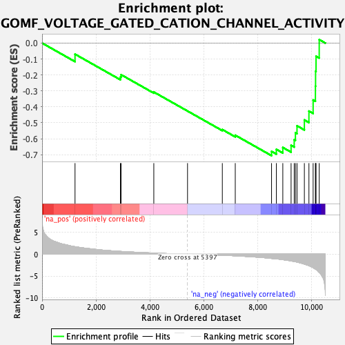
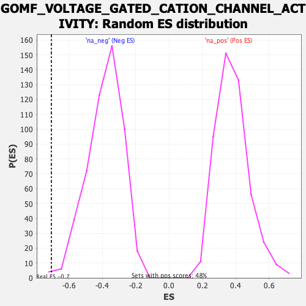

| Dataset | qlf.KOd4vsWTd4_gsea_score |
| Phenotype | NoPhenotypeAvailable |
| Upregulated in class | na_neg |
| GeneSet | GOMF_VOLTAGE_GATED_CATION_CHANNEL_ACTIVITY |
| Enrichment Score (ES) | -0.7061162 |
| Normalized Enrichment Score (NES) | -1.8377979 |
| Nominal p-value | 0.0019305019 |
| FDR q-value | 0.032237787 |
| FWER p-Value | 0.814 |

| SYMBOL | RANK IN GENE LIST | RANK METRIC SCORE | RUNNING ES | CORE ENRICHMENT | |
|---|---|---|---|---|---|
| 1 | CACNA1S | 1222 | 1.707 | -0.0697 | No |
| 2 | KCNQ5 | 2906 | 0.625 | -0.2130 | No |
| 3 | KCNK6 | 2930 | 0.619 | -0.1983 | No |
| 4 | CACNA1D | 4145 | 0.253 | -0.3071 | No |
| 5 | ITGAV | 5396 | 0.000 | -0.4263 | No |
| 6 | KCNIP2 | 6687 | -0.247 | -0.5425 | No |
| 7 | KCNK5 | 7167 | -0.376 | -0.5779 | No |
| 8 | TPCN2 | 8513 | -0.976 | -0.6794 | Yes |
| 9 | KCNA3 | 8692 | -1.083 | -0.6667 | Yes |
| 10 | KCNB1 | 8931 | -1.258 | -0.6549 | Yes |
| 11 | CACNA1A | 9238 | -1.560 | -0.6413 | Yes |
| 12 | KCNAB2 | 9354 | -1.678 | -0.6062 | Yes |
| 13 | KCNH2 | 9399 | -1.729 | -0.5630 | Yes |
| 14 | CDK5 | 9458 | -1.811 | -0.5189 | Yes |
| 15 | PTK2B | 9731 | -2.282 | -0.4823 | Yes |
| 16 | TPCN1 | 9900 | -2.616 | -0.4266 | Yes |
| 17 | CACNB1 | 10056 | -3.083 | -0.3569 | Yes |
| 18 | KCNA2 | 10141 | -3.429 | -0.2709 | Yes |
| 19 | RYR1 | 10147 | -3.452 | -0.1767 | Yes |
| 20 | CACNA2D4 | 10164 | -3.490 | -0.0826 | Yes |
| 21 | HVCN1 | 10282 | -4.206 | 0.0215 | Yes |
